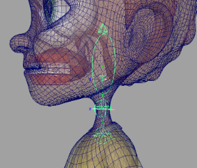

Creates a cartoon head and neck with manual/auto
volume, auto twist, Bezier ctrls, and more.
Guides:
- 'Neck
Root' - Position at the base of the neck.
- 'Neck
Mid' - Position at the middle of the neck.
- 'Head' - Position at the pivot point of the
head.

Attributes:
- 'Single Side
Guide' - For some Aim Guides, the
'side_vector' (twist) is locked and driven by a single 'side_vector', which keeps the
orientation consistent. Uncheck this attribute to unlock them if you need more control
over the twist. Re-template is required when changes are made. [Video]
- 'Ctrls Scale' - Scale all the node ctrls. Note
that the attachments 'Ctrls
Settings' and 'CtrlsShape' will
override this. [Video]
- 'Clean
Transformations' - If checked,
the zeroed
pose will be the same as the bind pose; if
unchecked, when zeroing the ctrls, they will align with a world axis specified in the
following two attributes. [Video]
- 'World
Orientation' - The world axis the ctrls will align with
when zeroed. Usually, this attribute's default value is the correct
value. [Video]
- 'World Orient
Twist' - Along with 'World Orientation', defines the
ctrls zeroed pose. Usually, the default value of 0 is the correct value. [Video]
- 'Expose
RotateOrder' - Exposes all the ctrls 'RotateOrder'
attribute in the Channel Box. [Video]
- 'Secondary
Ctrls' - Secondary ctrls are added under some ctrls to
help prevent gimbal lock.
A visibility attribute is added to the parent
ctrl. [Video]
- 'Volume' - Add
'Auto Volume' and 'Manual Volume' attributes.
- 'Ctrls Translate' - If checked, will enable translation
attributes on 'neck_root_ctrl' and 'head_ctrl'.
- 'Pin Ctrl' - Add a 'pin_ctrl' that
constrains 'neck_mid_ctrl' when activated.
Use a 'SpaceSwitch' attachment for 'pin_ctrl' to
properly use this feature.
- 'Ribbon Joints' - The number of skinning joints the head
has besides 'neck_root_jnt' and 'head_jnt'. [Video]
- 'Ribbon Micro Ctrls' - Create a ctrl for every
ribbon skinning joint. [Video]
- 'Bezier Ctrls' - Add ctrls that deform the
ribbon like a Bezier curve. [Video]
- 'Bezier Ctrls
Offset' - Position offset of the Bezier ctrls from the joint
chain.
Connections:
- 'Root Input' - Drives the whole node.
- 'Root Output' -An output at the
'neck_root_jnt'.
- 'Tip Output' - An output at the 'head_jnt'.
_____________________________________________
Get Arise at: https://www.ariserigging.com